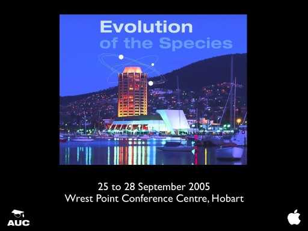

Using Mac OS-X to drive immersive displays for science visualisation and education
Paul Bourke
AUC Conference "Evolution of the Species"
Hobart, Tasmania. September 2005
Abstract:
The Swinburne University Centre for Astrophysics and Supercomputing
employs immersive displays for scientific visualisation as well as
for our public education and outreach activities. I will discuss and
demonstrate how Mac OS-X is being used to drive these exciting
environments which include stereoscopic walls, hemispherical domes,
and tiled displays. The majority of the software development is
intended to be cross platform between various flavours of UNIX and as
such is based upon standards such as X11 and OpenGL. However recent
developments in Tiger have enabled us to provide new solutions based
up on QuickTime 7 and the Quartz engine.
PDF
auc.pdf (Half size frames, without the animations)
